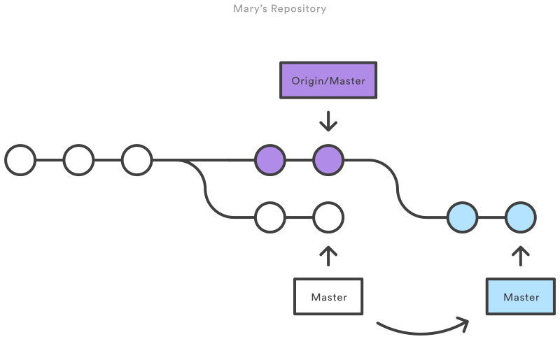

Control de versiones
Contenido
4. Control de versiones¶
-- Alguien que no sabe manejo de versiones trabajando en su tesis
4.1. Manejo de versiones en proyectos de software¶
Los proyectos de software no son estáticos, se agregan, modifican y eliminan funcionalidades continuamente. Lo anterior puede estar motivado por cambios en los requerimientos, cambios en las librerías que utilizamos o cambios en el hardware donde correrá nuestra aplicación.
Los manejadores de versiones mantienen un historial de los cambios o modificaciones que hagamos en nuestro proyecto. En general estos cambios irán acompañados con un (1) Mensaje que explica el cambio y con el (2) Nombre del autor del cambio.
Importante
Con el historial de cambios podemos devolver nuestro proyecto a estados anteriores. Por ejemplo, si nos enfrentamos a un bug en nuestro programa, podemos explorar cual fue el cambio que introdujo el bug.
Los manejadores de versiones permiten coordinar versiones paralelas de nuestro proyecto. Estas versiones paralelas se llaman ramas.
Importante
Utilizando ramas podemos probar nuevas funcionalidades o features sin afectar la aplicación de cara al usuario (rama principal). También las ramas facilitan la colaboración y el trabajo sincronizado cuando varios desarrolladores trabajan en un mismo proyecto
Una vez que la funcionalidad en la rama está solidamente probada está puede fusionarse (merge) con la rama principal
En resumen el control de versiones
hace que nuestros proyectos sean más fáciles de mantener
facilita la colaboración entre desarrolladores
le da trazabilidad a nuestros proyectos
hace que nuestros resultados sean más fáciles de reproducir
4.2. Git¶
En esta lección vamos a aprender a usar el controlador de versiones Git, un sistema libre y gratis de manejo de versiones distribuido
Distribuido se refiere a que no es necesario que una unidad central mantega el código del proyecto. Todos los que participan del proyecto tienen copias locales completas de la historia del proyecto.
¿Cuáles son las ventajas de Git?
Flexible: Soporta flujos de trabajo muy diversos
Gran grado de adopción: Integrado en IDE y plataformas remotas
¿Qué otros manejadores de versiones existen?
Distribuidos: Mercurial
Centralizados: Subversion (SVN)
4.2.1. Instalación y configuración inicial de Git¶
En linux git está disponible en los repositorios oficiales de cada distribución
Ubuntu:
sudo apt install gitFedora:
sudo yum install gitArch Linux:
sudo pacman -S git
En Windows recomiendo descargar e instalar Git BASH
Configuración básica
Define tu nombre y correo. Con estos datos se firmarán los cambios que agregues al repositorio
git config --global user.name "Tu nombre aquí"
git config --global user.email "tu_email_aquí@example.com"
Selecciona el nombre de la rama inicial de tu repositorio
git config --global init.defaultBranch main
Selecciona el editor de texto que usará git por defecto (vim, emacs, nano, etc)
git config --global core.editor <editor>
Configura git para que utilice colores
git config --global color.ui true
Puedes revisar las opciones que haz configurado con
git config --global --list
4.3. Estructura y flujo de trabajo de un repositorio git¶
La siguiente figura resume muy bien el flujo de trabajo con Git

A continuación se explican los términos del diagrama
- Commit
Es un conjunto de modificaciones en el código que hemos firmado para incluirlas a la historia del proyecto
- Repositorio local (HEAD)
Es donde se guarda la historia del proyecto con todos sus commits
- Workspace o Working directory
Es donde se guardan las modificaciones que se están realizando actualmente
- Index, Stage o Staging area
Es donde se guardan las modificaciones que se desean agregar en el próximo commit.
- Repositorio remoto (remote)
Es un copia del repositorio que está en otro computador o en la nube (por ejemplo en github)
Un archivo dentro del proyecto puede estar en uno de los siguientes tres estados
- Untracked
Archivo creado o modificado que no es parte de la historia
- Unstaged
Archivo modificado que es parte de la historia pero que no está en la staging area
- Staged
Archivo modificado que es parte de la historia y que ha sido incluido al próximo commit
A continuación se muestra como utilizar los comandos de git para realizar las siguientes operaciones
Creación de proyectos (repositorios)
Agregar cambios al proyecto
Verificar cambios
Deshacer cambios
Crear y seleccionar ramas
4.3.1. Creación de repositorios¶
Para crear un proyecto vacio cuya historia está manejada por git creamos una nuevo directorio
mkdir mi_proyecto_nuevo
cd mi_proyecto_nuevo
y luego usamos el comando
git init
Esto creará un directorio oculto llamado .git que mantiene la configuración e historia del repositorio.
También podemos crear un proyecto a partir de un repositorio local con
git clone /path/a/mi/otro/proyecto
O a partir de un repositorio remoto con
git clone usuario@servidor:/path/a/otro/proyecto
Más adelante veremos como se combina esta opción con la plataforma github
4.3.2. Agregar cambios al repositorio¶
Si queremos trackear o añadir un archivo modificado al área de stage utilizamos el comando
git add nombre_de_archivo_cambiado
Si quiero añadir todos los archivos del directorio actual al staging area se puede utilizar (con cautela)
git add .
Una vez que hemos terminado de agregar los archivos modificados que deseamos se crea un commit en el repositorio con
git commit -m "Un mensaje que explica el cambio y por qué fue necesario"
Consejo
Escribe buenos mensajes. Esto hará más fácil explorar la historia para ti y para otros desarrolladores
Si queremos modificar el mensaje del último commit podemos utilizar
git commit --amend
4.3.3. Verificando y analizando cambios¶
Si tenemos un archivo modificado en el workspace podemos compararlo contra su último commit utilizando
git diff nombre_de_archivo
Este comando mostrará resaltadas las lineas que fueron modificadas, agregadas o eliminadas
Si queremos verificar el estado de los archivos del directorio de trabajo utilizamos
git status
Este comando retorna una lista con los archivos indicando si están untracked, unstaged o staged
Finalmente si queremos buscar un commit en particular podemos utilizar
git log
Este comando retorna una lista con los commits realizados hasta ahora (nombres de usuario y mensajes)
Pueden agregarse las opciones
--author=nombreusuariomuestra sólo los commits de un usuario particular--statmuestra solo los archivos cambiaron--patchmuestra además las líneas agregadas/eliminadas
4.3.4. Deshacer cambios¶
Para descartar los cambios locales que se han realizado a un archivo utilizamos
git checkout -- nombre_de_archivo_cambiado
Esto copia el archivo desde la zona de stage al directorio de trabajo
Para sacar un archivo modificado del próximo commit/cambio utilizamos
git reset nombre_de_archivo_cambiado
Peligro
(Usar con cautela) Para descartar todos los cambios y devolver el proyecto completo al último commit
git reset --hard
Para eliminar un archivo del repositorio
git rm --cached nombre_archivo
Nota
Con la opción --cached el archivo permanece en el disco duro, es decir que sólo se elimina del índice del repositorio
Podemos forzar que git ignore los cambios de un archivo en particular agregando su nombre o ruta en un archivo de texto plano llamado .gitignore. Puedes tener varios .gitignore dentro de tu repositorio.
Consejo
Agrega a .gitignore código compilado, archivos binarios pesados o archivos de configuración que contengan información privada (claves/tokens de acceso)
4.3.5. Creación y manejo de ramas/branches¶
Las ramas son muy útiles cuando queremos desarrollar nuevas funcionalidades en base al estado actual del repositorio. Además son particularmente importantes cuando trabajamos en grupo
Para mostrar las ramas que existen en el repositorio
git branch -a
Por defecto tenemos sólo una rama: main
Para crear una rama nueva
git branch "nombre_nueva_rama"
Puedo cambiar entre ramas
git checkout "nombre_nueva_rama"
Para volver a la rama main
git checkout main
La siguiente figura muestra un ejemplo de trabajo utilizando ramas:

4.4. Trabajando con un repositorio remoto¶
Los repositorios remotos son versiones de tu proyecto que están almacenados en Internet. Cuando trabajamos en grupo un repositorio remoto permite que todos estén de acuerdo en una versión de la historia
Existen proveedores de hosting para proyectos administrados con Git, los más famosos son GitHub y GitLab
A continuación usaremos GitHub para almancenar una versión remota de nuestro repositorio
Crearse una cuenta en GitHub
Visita el sitio web: https://github.com/join
Crea una cuenta (es gratis)
Creando un repositorio en GitHub
En el sitio web de GitHub, una vez que estés logeado en tu cuenta
Haz click en el signo + en la esquina superior derecha
Selecciona “New repository”
Escoge un nombre y una descripción
Escoge repositorio público
(Opcional) Puedes inicializar el repositorio con un archivo
READMEy un archivo.gitignoreSelecciona Create Repository
4.4.1. Clonando un repositorio remoto de GitHub a mi computador¶
Accede al repositorio
Selecciona el botón verde: “Clone or download”
Copia la dirección del repositorio
Escribe el comando
git clone https://github.com/nombre_de_usuario/nombre_de_repositorio.git
Esto creará una carpeta llamada “nombre_de_repositorio” en el directorio local
4.4.2. Enviando commits desde el repositorio local al remoto¶
Luego de añadir archivos y hacer un commit podemos “empujar los cambios” a GitHub usando
git push
Cada vez que hagamos un push se nos pedirán nuestras credenciales.
Truco
Para evitar escribir nuestra clave muchas veces podemos usar
git config credential.helper 'cache --timeout=3600'
Esto configura git para que no pida las credenciales hasta que haya pasado 1 hora
En general no podemos hacer un push en un repositorio que no es nuestro o donde no somos colaboradores. Para aportar un cambio a un repositorio que no administramos debemos hacer un pull request
4.4.3. Trayendo cambios desde el repositorio remoto al local¶
Para actualizar nuestro repositorio local al último commit del repositorio remoto utilizamos
git pull
La operación anterior corresponde a dos operaciones juntas
git fetch
que trae al repositorio local los cambios del repositorio remoto y
git merge
que trae al directorio de trabajo los contenidos del repositorio local
Si estamos trabajando sólos y desde un solo directorio de trabajo estos comandos no deberían resultar en error
Si estamos trabajando usando varios directorios de trabajo o en grupo puede ocurrir que
git mergeencuentre conflictos que deberemos resolver
Para ver los cambios luego de hacer fetch y antes de hacer un merge podemos usar
git diff origin/master
4.4.4. Resolviendo conflictos¶
Digamos que dos personas están trabajando en un mismo proyecto y tienen una copia local hasta el último commit
La primera persona hace modificaciones y las empuja al repositorio
Esto funciona ok
La segunda persona hace modificaciones y las empuja al repositorio
Esto podría no funcionar ya que pueden haber conflictos con lo que se empujó anteriormente
Lo que debe hacer la segunda persona es
Hacer un pull del repositorio con
git pullGit detectará los conflictos y se mostrarán como
<<<<< HEAD Esto lo escribio persona 2 y no está en el commit de persona 1 ======== Esto lo escribio persona 1 y no estába en el directorio de persona 2 >>>>> origin/master
Persona 2 tiene que decidir que se queda y que se va
La siguiente figura muestra el resultado de un merge en el histórico de commits
{kind=link}
4.5. Recursos extra¶
Para estudiar más a fondo sobre Git recomiendo
Muy completo tutorial de Git de Atlassian
Clases 2 y 3 del curso CS207 del IACS, Harvard
Libro Pro Git (libre)